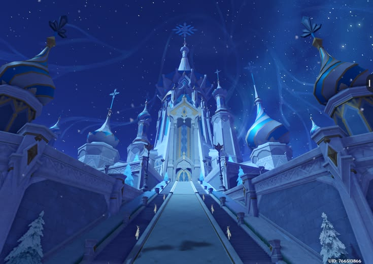

Zapolyarny Palace Outskirts
The grounds surrounding the great palace, where frosted towers and carved walls stand against the sky. The outskirts are quieter than the palace itself, and they offer some of the best views of its architecture under the aurora.
Best for: Architecture